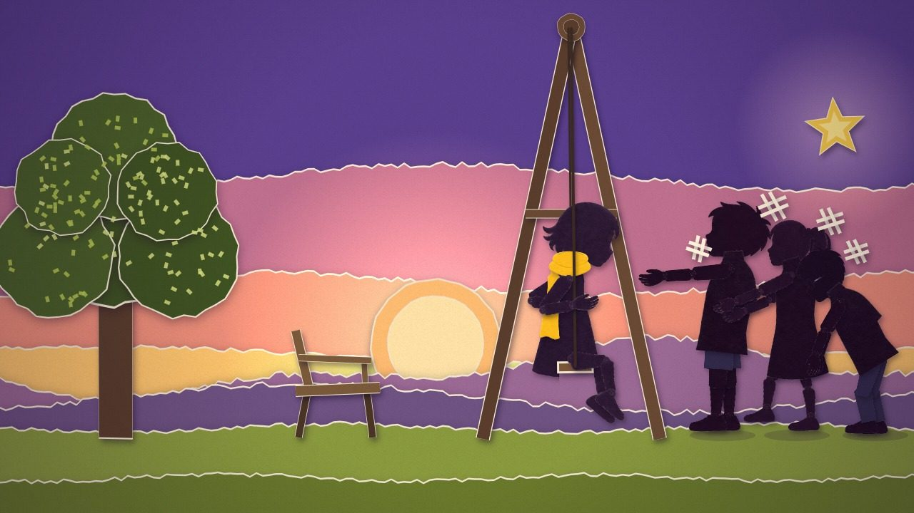
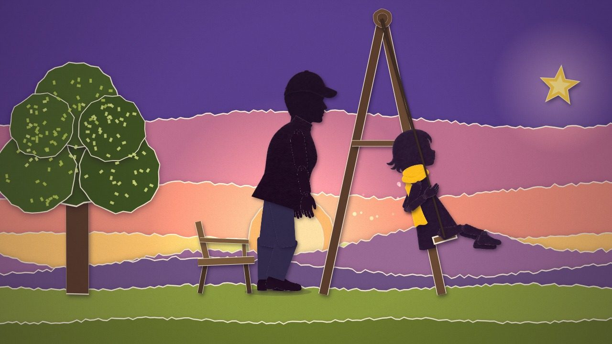
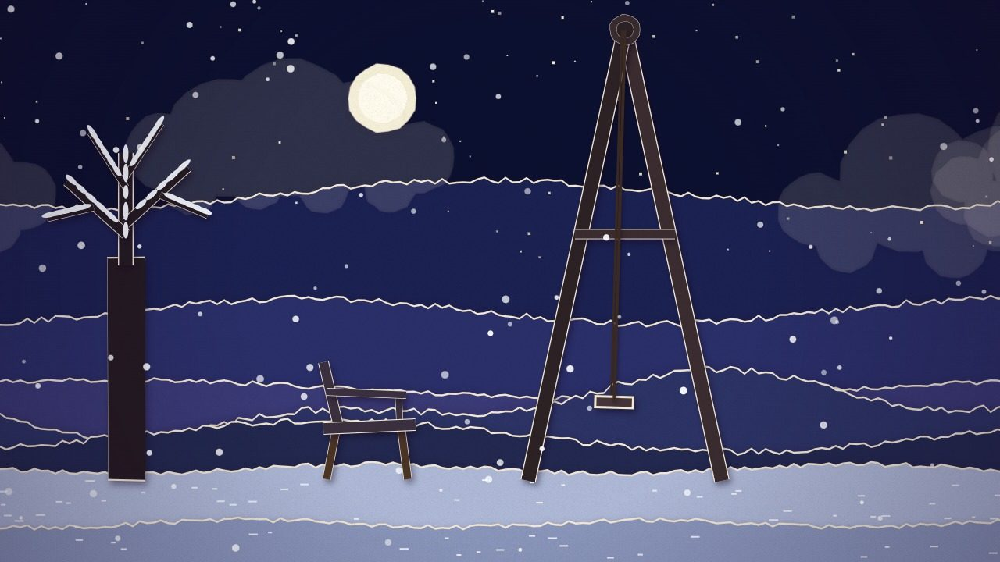

作品一覧
WORK 03 / MOVIE
KINETIC
ひとりでは届かない星に、誰かのひと押しを。
ブランコをうまくこげない少女と、その背中を押す父。季節がめぐり、年月がたって、こんどは――。紙を切って重ねたような人物と風景を、コードで動かした、セリフのない62秒のアニメーションです。
再生ボタンを押すと、このページの中に YouTube（youtube-nocookie.com）の動画を読みこみます。押すまでは、YouTube には接続しません。YouTube で見る
01SCENES
紙の世界で、時間が流れる。
人物も風景も、やぶった紙を重ねたような切り絵の質感で描いています。ブランコのゆれ、押す手、季節の移り変わりまで、すべてコードで動かしました。
-

01ひとりでは、こげないブランコをうまくこげない少女。通りがかった子どもたちに笑われて、うつむきます。 -

02父のひと押し父が背中を押すたびに、ブランコは少しずつ大きくゆれていきます。 -

03星にふれるいちばん高くゆれたとき、少女の指先が星にふれます。押す瞬間と星にふれる瞬間に、音楽が重なるように作っています。 -

04季節がめぐる春夏秋冬が早送りでめぐり、年月が流れます。空・地面・木の葉の紙が、季節ごとに入れかわります。この先は、動画でごらんください。
02MAKING
AIとコードで、紙を動かす。
- 人物は、頭・胴・腕・脚を別々の紙のパーツにして、関節で動かしています。パーツの絵は、画像生成 AI（Codex）で作りました。
- 空・丘・木・ブランコと紙の質感は、Claude Code といっしょに、HTML の canvas と JavaScript で描いています。
- 音楽は、AI と相談しながらピアノと弦の曲を書き、SoundCraft で仕上げました。
- 押す手が背中にふれる位置や、音と映像のずれを数字で確かめてから、録画して仕上げています。
03CREDITS
クレジット